먼저 생각해 보세요.
Ich bin länger online als du. 누가 더 오래 온라인에 있나요?
länger als는 '~보다 더 오래'라는 뜻이에요.
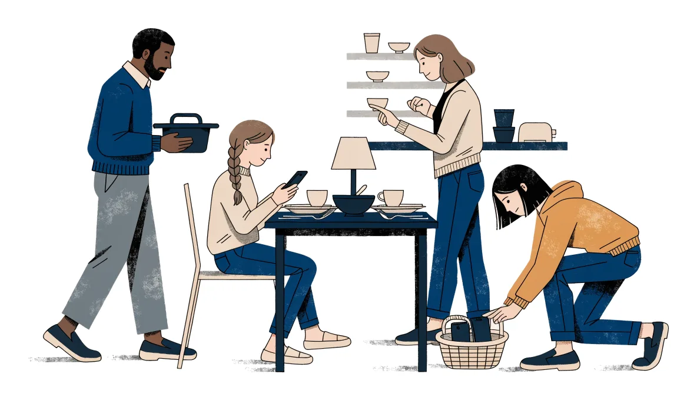
5월 초예요. Wagner 가족의 저녁 식사 시간이에요. 휴대폰을 언제, 얼마나 쓰는지 이야기하고 서로 비교해요.
눌러서 들어 보세요.
먼저 생각해 보세요.
Ich bin länger online als du. 누가 더 오래 온라인에 있나요?
länger als는 '~보다 더 오래'라는 뜻이에요.
Lektion 2의 낱말 다섯 개를 다시 떠올려 보세요.
문법 wenn-Sätze, Komparativ und Superlativ, als, wie
이 과를 마치면 휴대폰과 인터넷을 어떻게 쓰는지 말하고, 둘을 비교하고, '~하면'이라고 조건을 말할 수 있어요.
저녁 식사 시간, Wagner 가족의 부엌이에요.
들으면서 찾아보세요. 이 집의 규칙은 무엇인가요?
다음 날 쉬는 시간이에요. 친구들이 휴대폰 쓰는 시간을 비교해요.
들으면서 찾아보세요. 누가 가장 오래 온라인에 있나요?
두 대화를 듣고 답하세요.
Wagner 가족의 규칙은 무엇인가요?
Yunas Vater liest beim Essen Nachrichten.
Wann kann Emma Elif antworten?
누가 가장 오래 온라인에 있나요?
Yuna는 하루에 네 시간이에요.
Lukas spielt mehr als seine Freunde.
Was sieht Elif am liebsten?
Yunas Handy ist neuer als das Handy von Lukas.
Es ist älter als dein Handy, Lukas.
낱말 28개예요. 낱말이나 예문 앞의 단추를 누르면 소리가 나요. 명사는 der, die, das를 색으로 구분했어요.
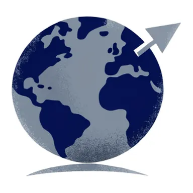
das Internet 인터넷
Ich suche das im Internet.그건 인터넷에서 찾아볼게요.
online 온라인의, 접속한
Ich bin drei Stunden am Tag online.나는 하루에 세 시간 온라인에 있어요.
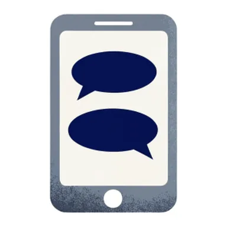
die Nachricht, die Nachrichten 메시지, 뉴스
Ich schreibe eine Nachricht.나는 메시지를 써요.
das Video, die Videos 영상
Elif sieht gern Videos.Elif는 영상을 즐겨 봐요.
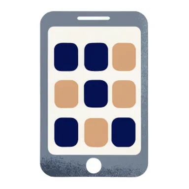
die App, die Apps 앱
Die App ist neu.그 앱은 새로 나왔어요.
der Computer, die Computer 컴퓨터
Der Computer ist langsam.컴퓨터가 느려요.
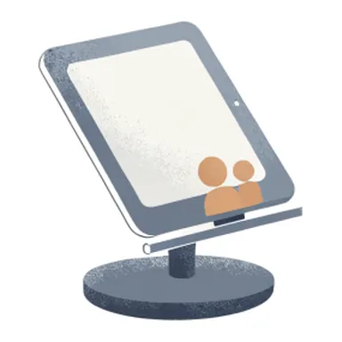
das Tablet, die Tablets 태블릿
Jun hat ein Tablet.Jun은 태블릿이 있어요.
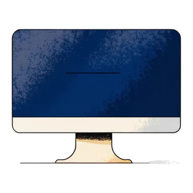
der Bildschirm, die Bildschirme 화면
Der Bildschirm ist groß.화면이 커요.
die Bildschirmzeit 화면을 보는 시간
Meine Bildschirmzeit ist zu lang.나는 화면을 보는 시간이 너무 길어요.
die Umfrage, die Umfragen 설문 조사
Wir machen eine Umfrage.우리는 설문 조사를 해요.
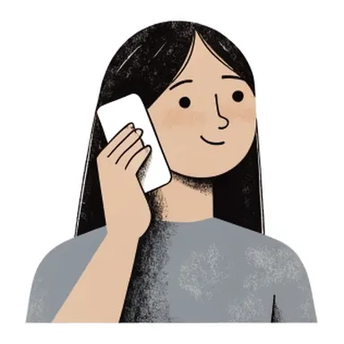
telefonieren, hat telefoniert 통화하다
Ich telefoniere mit meiner Familie.나는 가족과 통화해요.
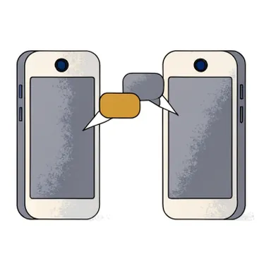
chatten, hat gechattet 채팅하다
Wir chatten jeden Abend.우리는 저녁마다 채팅해요.
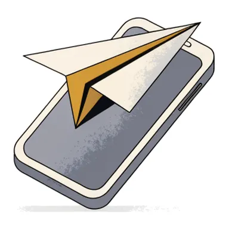
schicken, hat geschickt 보내다
Schick mir bitte ein Foto!사진 한 장 보내 줘!
antworten, hat geantwortet 답하다
Ich antworte später.나중에 답할게요.
benutzen, hat benutzt 쓰다, 사용하다
Ich benutze das Handy jeden Tag.나는 휴대폰을 날마다 써요.
anmachen, hat angemacht 켜다
Mach bitte den Computer an.컴퓨터를 켜 줘.
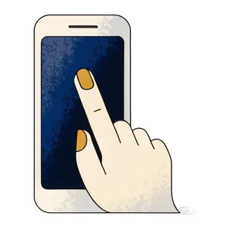
ausmachen, hat ausgemacht 끄다
Ich mache das Handy aus.나는 휴대폰을 꺼요.
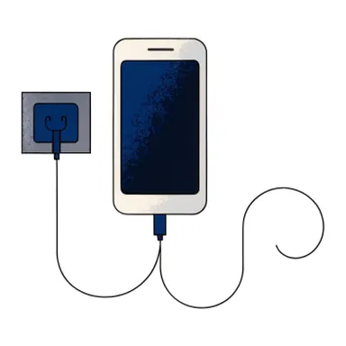
laden (du lädst, er lädt) 충전하다
Ich muss mein Handy laden.휴대폰을 충전해야 해요.
wenn ~하면, ~할 때
Wenn ich lerne, mache ich das Handy aus.공부할 때 나는 휴대폰을 꺼요.
als ~보다
Lukas ist größer als Yuna.Lukas는 Yuna보다 커요.
so … wie ~만큼
Ich bin so alt wie du.나는 너와 나이가 같아.
schnell 빠른
Das Internet ist schnell.인터넷이 빨라요.
langsam 느린
Mein Handy ist langsam.내 휴대폰은 느려요.
mehr 더, 더 많이
Ich spiele mehr als du.나는 너보다 게임을 더 많이 해.
am liebsten 가장 즐겨
Am liebsten sehe ich Videos.나는 영상 보는 것을 가장 좋아해요.
die Regel, die Regeln 규칙
Bei uns gibt es eine Regel.우리 집에는 규칙이 있어요.
fertig 끝난, 다 된
Das Essen ist fertig.밥이 다 됐어요.
sitzen, hat gesessen 앉아 있다
Alle sitzen am Tisch.모두 식탁에 앉아 있어요.
이 과의 낱말로 여덟 문제를 풀어요.
자주 쓰는 낱말 몇 개는 비교할 때 모양이 바뀌어요. 줄을 누르면 소리가 나요.
예문을 보고 답해 보세요.
wenn 문장이 앞에 오면 쉼표 뒤에는 무엇이 바로 오나요?
규칙
wenn은 '~하면', '~할 때'라는 뜻이에요. weil, dass처럼 wenn 문장에서도 동사가 맨 끝으로 가요. wenn 문장이 앞에 오면 쉼표 뒤에 바로 동사가 와요.
| wenn 문장 | 동사 | 나머지 |
|---|---|---|
| Wenn ich lerne, | mache | ich das Handy aus. |
| Wenn wir essen, | bleibt | das Handy in der Tasche. |
| Wenn es regnet, | bleibe | ich zu Hause. |
| Wenn ich Zeit habe, | sehe | ich Videos. |
주의 wenn 문장은 뒤에 와도 돼요. Ich bleibe zu Hause, wenn es regnet. weil, dass, wenn 뒤에서는 언제나 동사가 맨 끝이에요.
예문을 보고 답해 보세요.
'~보다'라고 비교할 때 쓰는 말은 무엇인가요?
규칙
둘을 비교할 때는 형용사에 -er를 붙이고 als(~보다)를 써요. 둘이 같을 때는 so … wie(~만큼)를 써요. 짧은 낱말은 a, o, u가 ä, ö, ü로 바뀌는 것이 많아요.
| 원래 모양 | 비교급 | 예문 |
|---|---|---|
| schnell | schneller | Emmas Handy ist schneller als mein Handy. |
| klein | kleiner | Mein Zimmer ist kleiner als dein Zimmer. |
| alt | älter | Mein Handy ist älter als dein Handy. |
| lang | länger | Ich bin länger online als du. |
| groß | größer | Lukas ist größer als Yuna. |
| gut | besser | Dein Foto ist besser als mein Foto. |
| viel | mehr | Ich spiele mehr als du. |
| gern | lieber | Ich sehe lieber Videos. |
주의 한국어의 '더'처럼 mehr를 앞에 붙이지 않아요. mehr schnell이 아니라 schneller예요. teuer는 teurer, dunkel은 dunkler가 돼요.
예문을 보고 답해 보세요.
'가장'이라고 말할 때 형용사 앞에 오는 말은 무엇인가요?
규칙
여럿 가운데 '가장 ~하다'라고 할 때는 am과 -sten을 써요. -t, -d, -z로 끝나는 낱말에는 -esten을 붙여요. groß는 am größten이라고 해요.
| 원래 모양 | 비교급 | 최상급 |
|---|---|---|
| schnell | schneller | am schnellsten |
| klein | kleiner | am kleinsten |
| alt | älter | am ältesten |
| lang | länger | am längsten |
| groß | größer | am größten |
| gut | besser | am besten |
| viel | mehr | am meisten |
| gern | lieber | am liebsten |
주의 좋아하는 정도는 gern, lieber, am liebsten으로 말해요. Ich spiele gern Fußball. Ich schwimme lieber. Am liebsten tanze ich.
Frau Schneider가 8b의 설문 결과를 말해요. 듣고 답하세요.
Die Umfrage in der 8b
Frau Schneider Wir haben in der 8b eine Umfrage gemacht. Alle Schüler haben ein Handy.
Frau Schneider Die Schüler sind drei Stunden am Tag online. Am Wochenende sind sie länger online als in der Woche.
Frau Schneider Am liebsten sehen sie Videos. Sie chatten auch viel.
Frau Schneider Nur fünf Schüler lesen Nachrichten.
Frau Schneider Zwanzig Schüler sagen, dass sie das Handy ausmachen, wenn sie lernen.
Wie lange sind die Schüler am Tag online?
In der Woche sind die Schüler länger online als am Wochenende.
주말에 더 오래 온라인에 있어요.
Was machen die Schüler am liebsten?
공부할 때 휴대폰을 끈다고 답한 학생은 몇 명인가요?
듣고 알맞은 것을 고르세요.
누가 더 큰가요?
Lukas ist größer als Yuna.
어느 것이 더 비싼가요?
Das Tablet ist so teuer wie das Handy.
Elif는 피곤할 때 무엇을 하나요?
Wenn ich müde bin, höre ich Musik.
Emma는 누구와 채팅하는 것을 가장 좋아하나요?
Am liebsten chatte ich mit Yuna.
Lukas가 반 블로그에 쓴 글이에요. 읽고 답하세요.
Meine Handyregeln
Meine Eltern haben drei Regeln für das Handy.
Regel eins: Wenn wir essen, ist das Handy aus.
Regel zwei: Wenn ich Hausaufgaben mache, liegt das Handy im Wohnzimmer.
Regel drei: Um neun Uhr abends mache ich das Handy aus, weil ich schlafen muss.
Ich finde Regel zwei am besten. Wenn das Handy nicht im Zimmer ist, lerne ich schneller.
Aber Regel drei finde ich nicht so gut. Meine Freunde chatten am Abend länger als ich.
Wo ist das Handy, wenn Lukas Hausaufgaben macht?
Um neun Uhr abends macht Lukas das Handy aus.
Welche Regel findet Lukas am besten?
Lukas는 왜 셋째 규칙이 마음에 들지 않나요?
8b의 설문 결과예요. 표를 보고 답하세요.
Was machst du online?
| Was? | Schüler |
|---|---|
| Videos sehen | 22 |
| chatten | 20 |
| Musik hören | 18 |
| Spiele spielen | 12 |
| Nachrichten lesen | 5 |
가장 많은 학생이 하는 것은 무엇인가요?
Mehr Schüler chatten als Musik hören.
채팅은 20명, 음악 듣기는 18명이에요.
뉴스를 읽는 학생은 몇 명인가요?
wenn 문장이에요. 알맞은 것을 고르세요.
Wenn ich Zeit habe, einen Film.
wenn 문장 뒤에는 바로 동사가 와요.
Wenn es regnet, zu Hause.
Ich mache das Handy aus, wenn ich .
Wenn du fertig , kannst du spielen.
Wenn ich krank bin, nicht in die Schule.
괄호 안의 낱말을 비교급으로 바꿔 쓰세요.
Lukas ist als Yuna. (groß)
Lukas는 Yuna보다 커요.
Mein Handy ist als dein Handy. (alt)
내 휴대폰은 네 것보다 오래됐어요.
Emmas Handy ist als mein Handy. (schnell)
Emma의 휴대폰은 내 것보다 빨라요.
Ich spiele als du. (viel)
나는 너보다 게임을 더 많이 해요.
Dein Foto ist als mein Foto. (gut)
네 사진이 내 사진보다 좋아요.
Am Wochenende bin ich online. (lang)
주말에는 더 오래 온라인에 있어요.
als, wie, am 가운데 알맞은 말을 고르세요.
Ich bin länger online du.
Mein Handy ist so gut dein Handy.
Yuna ist längsten online.
Lukas ist größer Elif.
Mein Zimmer ist nicht so groß dein Zimmer.
liebsten sehe ich Videos.
낱말을 순서대로 눌러 문장을 만드세요.
공부할 때 나는 휴대폰을 꺼.
비가 오면 나는 집에 있어.
피곤할 때 나는 음악을 들어.
시간이 있으면 나는 영상을 봐.
낱말과 뜻을 짝지으세요.
듣고 그대로 써 보세요.
Mein Handy ist aus. 휴대폰 껐어요.
Ich bin länger online als du. 나는 너보다 더 오래 온라인에 있어.
Am liebsten sehe ich Tanzvideos. 나는 춤 영상을 가장 즐겨 봐.
Wie lange bist du am Tag online? 하루에 얼마나 온라인에 있어?
Ich bin drei Stunden am Tag online. 하루에 세 시간 온라인에 있어.
Was machst du am liebsten online? 온라인에서 뭘 가장 즐겨 해?
Am liebsten sehe ich Videos. 영상 보는 걸 가장 좋아해.
Ich bin länger online als du. 나는 너보다 더 오래 해.
Mein Handy ist so gut wie dein Handy. 내 휴대폰은 네 것만큼 좋아.
Emmas Handy ist am schnellsten. Emma의 휴대폰이 가장 빨라.
Wenn ich lerne, mache ich das Handy aus. 공부할 때는 휴대폰을 꺼.
Wenn ich Zeit habe, sehe ich Videos. 시간이 있으면 영상을 봐.
Bei uns gibt es eine Regel. 우리 집에는 규칙이 있어.
Beim Essen ist das Handy aus. 밥 먹을 때는 휴대폰을 꺼.
대화 B에서 역할을 하나 고르세요. 상대의 말은 음성으로 나오고, 내 차례에는 직접 말해요.
내가 휴대폰을 어떻게 쓰는지 적으세요. 완성된 문장을 소리 내어 읽어 보세요.
Ich bin zwei Stunden am Tag online.
Am liebsten sehe ich Musikvideos.
Wenn ich lerne, mache ich das Handy aus.
Mein Handy und ich
반 블로그에 올릴 글을 써 보세요. 휴대폰을 어떻게 쓰는지 다섯 문장쯤 써요.
Ich bin zwei Stunden am Tag online. Am liebsten sehe ich Videos und chatte mit meinen Freunden. Bei uns gibt es eine Regel: Wenn wir essen, ist das Handy aus. Mein Bruder ist länger online als ich, weil er viel spielt. Ich finde die Regel gut, denn beim Essen wollen wir zusammen sprechen.
다 쓴 뒤에 확인해 보세요.
Ich kann über Handy und Internet sprechen.휴대폰과 인터넷을 어떻게 쓰는지 말할 수 있어요.
Ich kann Dinge und Personen vergleichen.물건과 사람을 비교할 수 있어요.
Ich kann mit wenn sagen, was ich wann mache.어떤 때 무엇을 하는지 wenn으로 말할 수 있어요.